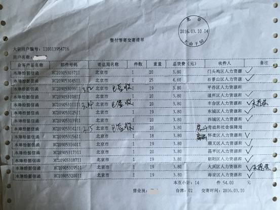
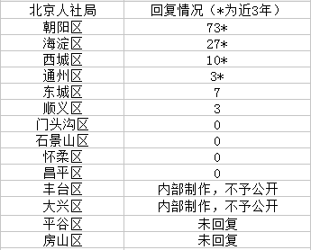
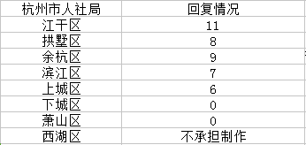
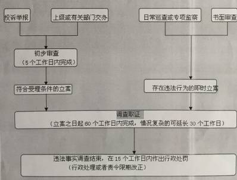

不少女性在求职过程中遭遇“宁用武大郎，不选穆桂英”的性别歧视，单独二孩政策的实施让女性就业的门槛再次悄然抬高。就业性别歧视愈演愈烈，屡禁不止的性别歧视让女性的就业率明显低于男性。两名就业性别歧视案的当事人黄蓉和马户分别向北京和杭州的人社区申请信息公开，要求各区人社局公开2008年-2015年受理的就业性别歧视举报和投诉案件数，以及各区受理就业性别歧视举报的工作流程。

同一举报请求 各地回复不一样
针对两位女青年的第一点请求，各区人社局的答复不尽一致。绝大多数人社局依照请求公开了近8年受理的案件数，部分人社局声称按照 《关于实施<劳动保障监察条例>若干规定》劳动保障监察案件结案后应建立档案，档案资料应当至少保存3年，因此这些人社局仅提供近3年的信息。北京市丰台区、大兴区，和杭州市西湖区人社局认为两人申请的第一点信息属于人社局在日常工作中制作或获取的内部信息，根据《中华人民共和国政府信息公开条例》第二十二条的规定决定不予公开。然而第二十二条是这么说的：申请公开的政府信息中含有不应当公开的内容，但是能够作区分处理的，行政机关应当向申请人提供可以公开的信息内容。这条规定的意思就是尽一切可能向申请人公开信息，然而上述几个人社局却反其道而行之。
西湖区人社局声称：申请人申请的信息应当是行政机关现有的文件等信息，行政机关不承担为申请人汇总、加工或重新制作信息，以及向其他行政机关和公民、法人或者其他组织搜集信息的义务。
朝阳区人社局15年受理案件数量激增 为14年受理举报案件数的6倍
据了解，我国人力资源和社会保障局下的劳动监察大队为处理就业性别歧视举报案件的单位。从北京市各区人社局的回复情况来看，朝阳区近3年来受理了71起就业性别歧视案件。2015年该区受理举报案件60起，超过其它各区历年受理案件数的总和。增幅较快的还有海淀区，近3年来共受理27起案件，15年受理的案件数是21件。门头沟等4个区的人社局表示近8年来未收到过投诉或举报。杭州市下城区和萧山区近8年来受理的举报和投诉案件也为零，其余各区（除西湖区人社局不承担制作）受理的举报案件数量均在10件左右。

（北京市各区人社局回复情况）

（杭州市各区人社局回复情况）
就业性别歧视举报受理流程 各地人社局都有明确规定
各区人社局处理涉嫌性别歧视投诉和举报流程基本相同。1.凡符合规定的投诉、举报，5个工作日内立案，不符合受理范围的投诉举报，告知举报人向有权机关反映。2.人社局立案后在60个工作日内调查处理，情节复杂的可以延长30个工作日。3.对违反劳动保障法律的行为，应当做出以下处理：（1）对依法应当受到行政处罚的，依法作出行政处罚决定；（2）对应当改正未改正的，依法责令改正或者作出相应的行政处理决定；（3）对情节轻微的，且已改正的，撤销立案。4.将案件受理结果告知举报人、投诉人。

性别就业歧视多，人社局处罚少
据从就业性别歧视监察大队（新浪微博）处了解，人社局在收到就业性别歧视举报后，一般只会责令企业修改招聘信息，武汉部分地区的人社局会要求企业出具保证书，保证在以后的招聘过程中不再违反相关规定。就业性别歧视违法处罚虽然有法可依，但是在实际的操作过程中，人社局基本不会处以罚款。同一公司多个职位涉嫌性别歧视，你如果只举报其中一个，公司也只会修改这个招聘岗位，由于没有罚款，执法威慑力差。“仅限男性”的招聘广告随处可见，甚至各大招聘网站依旧还在发布涉嫌性别歧视的招聘广告，但人社局并不觉得这类性别歧视、剥夺女性平等就业权的招聘广告属于情节严重。
我国相关法律对于招聘就业性别歧视的规定：
1. 《人才市场管理规定》第三十七条：由县级以上政府人事行政部门责令改正；情节严重的，并处10000元以下罚款；
2. 《劳动保障监察条例》第三十条：由劳动保障行政部门责令改正，对有第（一）项、第（二）项或者第（三）规定的行为，处2000元以上2万元以下罚款；
3. 《北京市人力资源和社会保障行政处罚自由裁量标准》 ：打击报复举报人罚款10000元整；
4. 《浙江省人力资源和社会保障厅关于印发浙江省人力资源社会保障行政处罚裁量基准的通知》：责令改正；情节严重的，并处10000元以下罚款
5. 《浙江省女职工劳动保护办法》 ：拒不改正的，可以处500元以上5000元以下罚款。
相关人大代表、专家的一些建议
2016年我国妇女就业人数已经达到4.3亿，相当于中国就业总人口的45%。据全国妇联在3个省、市的部分高校开展调研的结果显示，86.6％的女大学生表示在就业过程中遭受过性别歧视。就业性别歧视举报案件的增加，一方面表明了女性维权意识的觉醒，另一方面也反映了被揭露的就业性别歧视只是冰山一角。
两会声音
孙晓梅等36名代表连续2年两会提交制定反就业歧视法的建议。建议有关部门把制定反就业歧视法作为重点工作目标，加快调研和起草工作，尽快将该法纳入国家立法规划。
《反就业性别歧视》专家建议稿
禁止基于性别、婚育状况的歧视。用人单位不得在招聘广告、面试、书面劳动合同、口头约定或单位规章制度中限制劳动者结婚或生育。用人单位不得在招聘过程中要求劳动者提供婚姻或生育状况的信息，除非该信息是履行特定工作的内在需要；不得因劳动者在应聘时未如实陈述婚育信息而对其进行惩戒或者解除劳动合同。
北京市保安服务总公司海淀分公司副经理 朱良玉
希望国家制定一部专门的反就业歧视法。虽然现在已经出台了妇女保障法等法律，但我觉得一些法律法规缺乏可操作性，应该出台更具体的实施办法。
中国科学院院士 李林
在遇到涉及性别歧视的司法案例时，不能让当事人举证，而要让有歧视嫌疑的单位来举证。
安徽省妇联副主席 高莉
分别规定，招聘公告、录用、解雇、培训、晋升等环节，实施性别等歧视行为的不同法律责任。建立一个专门监管机构，负责反就业歧视问题。相关部门还要加强司法保护。